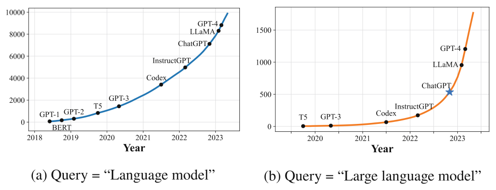
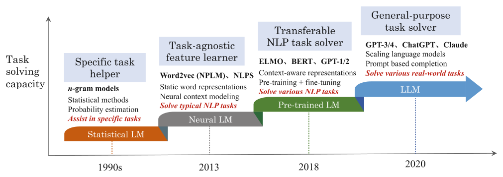

Chapter 1Introduction
Abstract This chapter offers an overview of the evolution and significance of large language models (LLMs) in the field of artificial intelligence. It begins by tracing the historical development of language models, from early statistical approaches to modern neural and pre-trained models, culminating in the emergence of LLMs like GPT-3 and PaLM. The chapter then delves into the unique capabilities of LLMs, such as their ability to acquire vast world knowledge, solve complex tasks, and follow human instructions. It also highlights the key technological advancements that have driven their success, including scaling laws, data engineering, and large-scale pre-training.
Furthermore, the chapter explores the challenges and opportunities presented by LLMs, particularly their potential to advance artificial intelligence and their transformative impact across various domains, including natural language processing, information retrieval, computer vision, and scientific research. Finally, the chapter concludes by outlining the structure and organization of this book, providing readers with a roadmap to navigate the subsequent discussions on LLM technology.
Humans primarily use language as a tool for expression and communication. Language ability typically develops during early childhood and continues to evolve throughout an individual’s life [1, 2]. To enable computers to effectively communicate with humans, researchers have focused on developing artificial intelligence (AI) algorithms that mimic human language capabilities, thereby facilitating natural language interactions between machines and humans. Endowing machines with the ability to read, comprehend, write, and communicate in a manner akin to human language remains a longstanding research challenge [3]. From a technical perspective, language models (LMs) have emerged as a primary avenue for advancing machine language intelligence, which will be the central focus of this book. This chapter provides an overview of the historical development of language models (Sect. 1.1), highlighting the distinctions between large language models (LLMs) and traditional language models (Sect. 1.2), introducing the key technologies that have contributed to the significant progress of LLM, and discussing the opportunities and challenges they present to the field of research and development (Sect. 1.4).
1.1The Development History of Language Models#
Language models are designed to capture the fundamental principles and rules of human language, enabling them to generate natural language text accurately. Depending on the technical approaches used, the evolution of language models can be broadly categorized into four key developmental stages:
- Statistical language model. Statistical language models (SLM), which emerged in the 1990s [4], are developed using statistical learning methods. SLMs were extensively explored in early research across fields such as information retrieval (IR) and natural language processing (NLP). Specifically, SLMs rely on the Markov assumption to model the generation of word sequences, predicting the next word in a sequence based on the preceding context. SLMs with a fixed context length of n are referred to as n-gram models (e.g., bigram or trigram models), which predict the target word based on a fixed-length prefix of context. As the order n increases, the number of transition probabilities that need to be estimated grows exponentially, leading to what is known as the “curse of dimensionality.” To mitigate this, smoothing techniques such as back-off estimation and Good–Turing estimation are employed to address data sparsity. However, these smoothing methods still struggle to effectively model high-order contexts and fail to accurately capture complex semantic relationships.
- Neural language model. Neural language models (NLMs) [5] use classic neural networks, such as multilayer perceptrons (MLPs) and recurrent neural networks (RNNs), to model the generation of text sequences. Bengio et al. [5] introduced the concept of distributed word representations, wherein a specific function is designed to predict the target word based on the aggregation of semantic context features, i.e., distributed word vectors. These distributed representations, commonly referred to as “word embeddings,” utilize low-dimensional dense vectors to capture the semantic meaning of words, effectively mitigating the data sparsity problem inherent in statistical language models. Such representations contrast significantly with the sparse, one-hot encoding used in traditional word vector models, where each word is represented as a unique vector in a high-dimensional space. In contrast, word embeddings more effectively capture the underlying semantics of word meanings by mapping similar words to nearby points in the latent dense vector space. Among the early efforts, Word2Vec [6, 7] is a widely recognized example in the field of word embeddings. This model uses a simplified shallow neural network to learn distributed word representations, which can then be used as semantic features for a variety of downstream tasks. Word2Vec and similar models have demonstrated substantial success across numerous NLP applications. These advances in language modeling, particularly in the area of semantic representation learning, have played a pivotal role in shaping the development of more advanced and capable language models.

- Pre-trained language model. Compared to the aforementioned word embedding models, pre-trained language models (PLMs) represent a significant advancement by utilizing more powerful architectures and larger text datasets for pre-training. As a repre-

sentative work, ELMo [9] employs extensive unlabeled text data to train a bidirectional LSTM (BiLSTM) network. The pre-trained BiLSTM effectively learns context-aware word representations, distinguishing it from the fixed word embeddings provided by models such as word2vec. Furthermore, the BiLSTM network of ELMo can be fine-tuned with downstream task data, resulting in improved performance on specific tasks. Nevertheless, traditional sequential neural networks (e.g., RNN) possess weak long text modeling capabilities and are not easily parallelly trained, which restricts the performance of early pre-training models like ELMo. In 2017, Google unveiled the Transformer model, which is built solely on the attention mechanism [10]. Since its introduction, the Transformer has become a foundational neural network architecture, driving a wave of innovation in the AI field. Unlike previous sequential neural networks, Transformer directly models the pairwise relationships between any two tokens in a sequence. As a result, it can effectively capture long-range semantic dependencies. Moreover, it is also hardware-friendly and enables efficient training through GPUs or TPUs. Building on the Transformer model, Google developed the BERT model [11], which utilizes only the encoder component of the Transformer architecture. BERT introduces specially designed pre-training tasks to learn bidirectional language representations using large-scale unlabeled data. Shortly after the introduction of the Transformer model, OpenAI recognized the potential of this novel architecture and utilized it to develop the first generation of its GPT model, GPT-1 [12]. Unlike BERT, which employs the encoder component of the Transformer, GPT-1 utilizes the decoder component and is pre-trained by predicting the next word in a sequence. The PLMs exemplified by ELMo, BERT, and GPT-1 have established a “pre-training+fine-tuning” paradigm for addressing a diverse range of NLP tasks. In this framework, the pre-training stage develops the model’s fundamental capabilities using large-scale unlabeled text, while the fine-tuning stage leverages labeled data to customize the model for specific tasks.
This paradigm has dramatically transformed traditional approaches to NLP.
- Large language model. Recent research has demonstrated that increasing the scale of model parameters and training data often enhances the performance of models on downstream tasks, a phenomenon known as the “scaling law” [13]. This insight has spurred efforts to train substantially larger pre-trained language models to examine these scaling effects, with seminal examples including GPT-3, which contains 175 billion parameters, and PaLM, with 540 billion parameters. These large-scale models exhibit behaviors distinct from smaller pre-trained models. For instance, GPT-3 is capable of performing in-context learning (ICL), allowing it to address downstream tasks with few-shot data demonstrations—a capability not present in GPT-2. Capabilities that are unique to larger models, yet absent in smaller ones, are often referred to as “emergent abilities” [14]. To highlight these advancements, the term “large language models” (LLMs) has been introduced to refer to pre-trained language models that are significantly larger than earlier models such as BERT and GPT-1. A typical application of LLMs is ChatGPT, which adapts the GPT series of language models for dialog tasks, demonstrating exceptional conversational capabilities and having a substantial societal impact upon its release. As illustrated in Fig. 1.1, the release of ChatGPT has led to a significant increase in academic publications on arXiv related to LLMs, highlighting the considerable attention this area of research has received from the academic community. Reflecting on the aforementioned technical evolution, it is evident that language models, while not an entirely novel concept, have undergone a significant developmental trajectory. Early language models primarily focused on the modeling and generation of natural language text, whereas the latest generation of language models, such as GPT-4, is designed to tackle a wide range of tasks. This shift from language modeling to task solving represents a notable advancement in the artificial intelligence and is crucial for understanding the frontier developments in language models. Figure 1.2 illustrates the capabilities and limitations of four generations of language models from the perspective of task-solving abilities. Initially, early statistical language models were mainly utilized to address relatively simple or conventional tasks, such as document retrieval, text classification, and speech recognition. Subsequently, neural language models emerged, focusing on the acquisition of task-agnostic semantic representations. This advancement aimed to minimize the reliance on human-driven feature engineering, thereby greatly expanding the range of tasks that language models could tackle. Moreover, pre-trained language models are capable of learning context-aware semantic representations and, through supervised fine-tuning, can markedly enhance their performance on downstream tasks, primarily within the realm of NLP. As model parameters, training data, and computational resources have escalated, the task-solving capabilities of the latest generation of language models, i.e., LLMs, have significantly improved, enabling them to directly address various downstream tasks through prompt engineering. In summary, the evolution of language models has significantly broadened their capacity scope and improved their task performance. This constitutes an important technological advancement in the history of AI.
1.2Capability Characteristics of Large Language Models#
The emergence of LLMs has reignited discussions about the potential realization of artificial general intelligence (AGI). While AGI is a widely discussed topic in academia, the generalization and universality of traditional machine learning algorithms remain quite limited. As a promising technical approach, LLMs are capable of accomplishing various downstream tasks in a unified manner, demonstrating tremendous potential as general-purpose task solvers. This section will briefly introduce the main capabilities of LLMs, particularly focusing on the advantages that traditional language models do not possess.
- A broader scope of world knowledge. Unlike traditional machine learning models, LLMs can acquire a much broader spectrum of world knowledge, thanks to pre-training on massive text corpora. In contrast, early expert systems were built around domain-specific knowledge bases and reasoning engines. These systems relied on logical rules and simple learning algorithms, which, while effective within narrow domains, had limited capacity to capture and utilize a comprehensive range of world knowledge. Similarly, early pre-trained models like BERT and GPT-1 used pre-training techniques, but their smaller sizes and limited data constrained the ability to learn a broad range of knowledge. As a result, these models often required fine-tuning to perform well on unseen downstream tasks. In comparison, modern LLMs can generalize across a much broader range of domains with minimal or no fine-tuning, owing to their larger scale and more extensive training data.
- Strong general task-solving ability. LLMs are primarily pre-trained on the task of predicting the next word. Although they are not explicitly trained for specific downstream tasks, they acquire a robust, general task-solving ability that far surpasses that of traditional models. The next-word prediction task, when applied to large-scale unlabeled text data, can be regarded as a form of multi-task learning [15]. In this context, predicting different words often entails performing a variety of subtasks, such as sentiment classification (e.g., “...this movie is really good”), numerical computation (e.g., “3+4=7”), and knowledge inference (e.g., “The capital of China is Beijing”). This versatile, generalizable task-solving ability has significantly influenced research across multiple domains. In natural language processing, for instance, many traditional tasks—such as summarization and translation—can now be effectively addressed through prompt-based learning with LLMs, yielding high-quality results. Consequently, earlier task-specific methodologies are increasingly being replaced.
- Strong complex task reasoning ability. In addition to their broad applicability, LLMs have demonstrated strong reasoning capabilities across a variety of real-world tasks. For instance, LLMs are capable of solving reasoning problems that involve intricate knowledge relationships and performing mathematical computations requiring a multi-step reasoning process. In contrast, traditional methods typically exhibit relatively poor performance on such tasks. Conventional approaches often necessitate model-specific adjustments or the incorporation of domain-specific training tasks to achieve competitive results. In contrast, LLMs demonstrate enhanced reasoning abilities following pre-training, without the need for such architectural modifications. Although some studies suggest that LLMs merely memorize patterns from training data rather than exhibit-ing true reasoning capabilities, many real-world applications underscore their impressive reasoning performance. The excellent performance of LLMs may not be fully explained by simply memorizing and recombining data patterns [16].
- Strong instruction following ability. LLMs establish a unified approach to task completion, where both inputs and outputs are expressed in natural language. Through the combined stages of pre-training and fine-tuning, LLMs acquire a strong ability to follow human instructions, allowing them to directly perform tasks based on natural language prompts. In earlier dialog systems, ensuring instruction compliance was a central focus of research. However, traditional models lacked general task comprehension and execution capabilities, often relying on manually crafted rules, prior knowledge, or extensive annotated data to develop instruction following capacity. In contrast, LLMs offer a more natural and versatile solution for human–computer interaction. This capability is particularly important for developing human-centered applications, such as intelligent assistants and smart devices.
- Robust human alignment ability. As AI technologies continue to advance, ensuring the security and alignment of machine learning models has become a matter of increasing importance. LLMs, owing to their outstanding performance, are now extensively deployed across various application domains. However, in the absence of effective alignment and oversight mechanisms, their deployment may introduce substantial risks. A widely adopted approach to alignment is reinforcement learning from human feedback (RLHF) [17], which seeks to guide the model in reinforcing desirable behaviors while rectifying undesirable ones, thereby ensuring alignment with human values and preferences. Many existing LLM applications deployed online combine enhanced endogenous alignment capabilities with external risk mitigation strategies, effectively minimizing the potential for misuse and reducing common operational risks.
- Extendable tool-use ability. In machine learning, the design and implementation of models are often constrained by inherent limitations, mainly due to the inductive assumptions underlying the model architecture and the limitations of the training data. Similarly, LLMs also exhibit certain limitations in their capabilities. For example, LLMs are often unable to effectively answer questions involving temporal ranges beyond the scope of their pre-training data, and they typically perform poorly on complex numerical computation tasks. One approach to overcoming these limitations is to augment LLMs with the ability to use external tools, such as search engines and calculators, through fine-tuning or in-context learning. However, the effective deployment of such tools requires a high degree of task understanding and tool manipulation capacity. Consequently, both traditional models and LLMs that have not undergone specialized fine-tuning are often unable to leverage external tools effectively. At present, many leading LLMs support the integration of a variety of external tools, thereby enhancing their task-solving capabilities and expanding their applicability across diverse domains. This book will introduce these characteristics in the subsequent chapters.
1.3Overview of Key Technologies in Large Language Models#
From statistical language models to large language models, researchers have un-dertaken a series of technical advancements that have led to substantial improvements in model performance. In the following, we will provide an overview of the key technologies that have contributed to the significant progress of LLMs.
- Scaling. Exploring the effects of scaling is a critical factor underlying the success of LLMs. In early studies, OpenAI conducted in-depth investigations into the effects of scaling on model performance, focusing on three main dimensions: the number of model parameters, the volume of training data, and the computational resources consumed. These investigations led to the formulation of quantitative scaling relationships, known as the “scaling laws” [13, 18] (published in 2020), which highlighted the performance benefits associated with scaling up model parameters. Notably, the introduction of GPT- 3, with its 175 billion parameters, demonstrated significant performance improvements, thus laying a crucial foundation for the advancement of subsequent GPT models. In 2022, the Google research team introduced the PaLM model, featuring 540 billion parameters, and DeepMind published significant research on the Chinchilla scaling law [19], further advancing the understanding of model scaling. These studies revealed that large-scale language models possess some important advanced capabilities, such as in-context learning, chain-of-thought reasoning, and other enhanced functions, which are not clearly manifested in smaller-scale models [14, 20, 21]. These properties have become distinguishing features that set large language models apart from previous generations of pre-trained models. While early research predominantly focused on the advantages of scaling model parameters, more recent work has shifted its attention toward the impact of data scale on model performance. This shift has driven the continuous expansion of pre-training datasets to improve model effectiveness. A fundamental enabler of effective scale expansion is the intrinsic scalability of the model architecture. The Transformer model, with its high scalability and robust support for hardware parallelization, has proven to be exceptionally well-suited for the development of LLMs. Extensive efforts continue to optimize and refine this architecture to enhance its performance and capacity further.
- Data engineering. In its 2019 GPT-2 paper [15], OpenAI presented a technical roadmap for the development of LLMs. Central to this approach is the optimization of next-token prediction over vast text corpora, enabling the model to acquire a rich repository of knowledge, which can then be leveraged to solve a wide range of downstream tasks via text completion. The principal advantage of this methodology lies in its generality, which significantly simplifies both the design and optimization processes. By relying on the format of natural language generation, the model’s training and utilization are unified. This essentially aligns with a broader trend in artificial intelligence, wherein several key advancements reflect the philosophy of “simplicity is the ultimate sophistication.” For example, early deep learning systems employed end-to-end training approaches to establish direct mappings between input and output, eliminating the need for traditional, complex systems that integrated multiple components. In this pre-training paradigm, the model’s capabilities are intrinsically tied to the data it is trained on, making data engineering a crucial factor in influencing model performance. In this context, data engineering involves three essential components. First, comprehensive data collection is necessary to ensure a wide range of high-quality data sources. Second, the collected data must undergo meticulous cleaning to refine its quality and make it effective for large-scale model training. Third, the design of effective data mix and training curricula is crucial to enhance the model’s learning efficiency and its ability to generalize from the data. Currently, there is a wealth of open-source, high-quality datasets available for English texts, along with extensive research on related data engineering techniques. However, further focused research and development in data engineering for other languages remain an important area for future work.
- Large-scale pre-training. Training high-performance LLMs presents significant challenges when compared to traditional pre-trained models. Due to the vast scale of model parameters, it is essential to employ large-scale distributed training algorithms to optimize the neural network parameters effectively. The training process typically combines parallelization strategies and optimization techniques, such as 3D parallelism— including data, pipeline, and tensor parallelism—and the Zero Redundancy Optimizer (ZeRO), among others. Specialized distributed optimization frameworks have been developed to support distributed training, facilitating the implementation and deployment of parallel algorithms. Noteworthy examples of such frameworks include DeepSpeed [22] and Megatron-LM [23], both of which enable the joint training of models across thousands, or even tens of thousands, of processing units. The implementation of large-scale training for LLMs necessitates the construction of a robust, full-stack optimization architecture capable of managing large pre-training datasets, strengthening feedback mechanisms, dynamically adjusting training strategies, and establishing an iterative process to refine model performance. Due to the enormous computational resources required, the training of LLMs often starts with sandbox experiments using smaller models to optimize training strategies before scaling up to the full model. For example, GPT-4 has incorporated a predictable training architecture that facilitates accurate estimates of a model’s final performance with significantly reduced computational costs [24]. Additionally, the development process requires attention to practical optimization techniques that enhance both the stability of training and the efficiency of the optimization process.
- Capability eliciting. After undergoing large-scale pre-training, LLMs can acquire a wide range of knowledge information. However, at this stage, the model’s capabilities are mainly established through the task of predicting the next word, and its ability to solve downstream tasks is relatively limited. In order to enhance the model’s task-solving ability, it is necessary to design appropriate instruction tuning techniques and prompting strategies to activate and induce the potential capabilities. Instruction tuning relies on natural language expressions for task descriptions, inputs, and desired outputs to refine the model, thereby enhancing its overall task-solving and task generalization capabilities. While existing research suggests that instruction tuning may not be suited for injecting new knowledge into the model, it mainly plays the role of “unlocking” the model’s inherent capabilities. In the context of prompt-based methods, it is critical to design effective prompt strategies that guide the model in generating accurate and contextually relevant answers. Several advanced prompt techniques, such as in-context learning and chain-of-thought prompting, have been proposed to improve the model’s performance on complex tasks. These strategies typically involve the construction of specialized prompt templates or formats to elicit the model’s task-solving abilities. Moreover, LLMs exhibit significant planning capabilities, enabling them to generate a series of progressively refined solutions for complex tasks. This iterative approach not only simplifies the task-solving process but also enhances the model’s performance by breaking down complex problems into manageable steps.
- Human alignment. The extensive corpora of text data available on the Internet encompass a broad spectrum of content, including potentially sensitive personal information, factual inaccuracies, and text imbued with subjective biases. Consequently, LLMs trained on such vast, unlabeled data are at risk of generating biased, privacy-invasive, or harmful outputs. In practical applications, it is essential to ensure that LLMs align with human values and preferences, thereby minimizing the risk of generating inappropriate content and promoting responsible model behavior. To tackle this challenge, the prevail-ing alignment framework generally follows the “3H alignment criteria,” which encompass helpfulness (usefulness), honesty, and harmlessness. These standards, unlike traditional task-specific optimization objectives, are inherently subjective and tied to human perception, making it difficult to establish formal, quantifiable optimization criteria. To mitigate these challenges, OpenAI introduced a reinforcement learning based approach using human feedback (RLHF) [17]. In this approach, a reward model is trained to evaluate the quality of model outputs, and reinforcement learning techniques are subsequently applied to adjust the model’s output behavior to better align with human expectations. However, due to the complexity of reinforcement learning-based optimization, there has been a growing emphasis within the research community on alternative supervised alignment methods. These approaches, such as direct preference optimization (DPO) algorithm [25], aim to simplify the optimization process and offer a more straightforward path to alignment. As the capabilities of AI systems continue to evolve, the need for robust supervision and effective risk management becomes increasingly critical, especially as models approach levels of superintelligence. In response to these concerns, OpenAI initiated the superalignment research project, which aims to investigate how to supervise highly capable AI systems effectively while ensuring their alignment with human values.
- Tool use. The capabilities of LLMs are often constrained by the scope of the information present in their pre-training datasets. Consequently, these models may face challenges when processing semantic information that extends beyond the temporal or domain scope of the training data. Additionally, LLMs often perform poorly on tasks originally formulated in non-standard natural language formats, such as complex arithmetic or numerical computations. To address these limitations, the integration of external tools has become a critical avenue for augmenting the functional capacity of LLMs [26, 27]. This approach involves training models to utilize various tools effectively, enabling them to meet specific functional requirements. The concept of tool use actually draws inspiration from human behavior, wherein individuals enhance their capabilities by leveraging external resources to complement their intrinsic skills. In practice, enabling LLMs to use external tools requires implementing systematic mechanisms, such as plugins, to facilitate interactions with resources like calculators, search engines, and other specialized utilities. This integration significantly broadens the range of tasks that LLMs can solve. Tool usage by LLMs is typically facilitated through two primary techniques: instruction tuning and prompt engineering. However, LLMs that have not undergone specialized training or lack well-designed prompts may encounter difficulties in effectively utilizing these tools. As the scope of potential applications for LLMs continues to expand, the development and integration of diverse external tool resources will play an increasingly vital role in enhancing the models’ performance and versatility. Despite significant advancements in LLM technology, there are still many limitations in its research that need further exploration. First, the intrinsic mechanisms governing LLMs remain inadequately understood. Current pre-training methodologies heavily rely on engineering optimizations, yet there is a significant gap in our understanding of the foundational principles that underpin the models’ core capabilities. A more in-depth theoretical exploration is needed to explain how these capabilities develop in LLMs. Secondly, the pre-training of LLMs requires the support of large-scale computational resources. However, access to these resources remains a significant challenge, especially within the academic community, where the ability to conduct systematic, large-scale studies is limited. Although high-performance open-source models are increasingly being developed and released by industry and large research institutions, transparency regarding the training processes remains limited, and comprehensive technical documentation detailing these methods is often unavailable. Thirdly, ensuring alignment between LLMs and human values poses a significant research challenge. In certain contexts or when subject to specific influences, LLMs may generate content that is inaccurate, harmful, or otherwise undesirable. This challenge becomes more difficult to manage as the capabilities of the models expand. To address the potential risks associated with models that could surpass human oversight in the future, it is imperative to develop more robust and effective oversight mechanisms. In summary, while significant progress has been made in the development of LLMs, numerous research challenges remain unresolved. These challenges require continued and concerted efforts from both researchers and engineers to overcome, in order to advance the field and ensure the responsible deployment of LLM technology.
1.4Technological Impact of Large Language Models#
The remarkable feature of LLMs is that they employ similar network architectures and training methods as early pre-trained models. However, by significantly scaling up model parameters, data volume, and computational resources, they achieve substantial improvements in performance. These models have successfully demonstrated the capacity to address a wide range of complex tasks with a single unified framework, representing a significant milestone in the capabilities of AI algorithms.
LLMs have significantly influenced the future trajectory of AI technology. The advent of models such as ChatGPT and GPT-4 has sparked renewed discussions on the feasibility of achieving AGI. In February 2023, OpenAI published a blog article titled “Planning for AGI and Beyond,” discussing both short-term and long-term plans for realizing AGI. Meanwhile, a research team from Microsoft tested the advanced capabilities of GPT-4 in an arXiv paper, suggesting it as a potential early version of AGI systems [16]. The rapid advancements in language model technology are driving fundamental shifts in AI research. The following part presents an overview of four representative areas where these advancements are expected to have a profound impact.
- Natural language processing. In the field of NLP, LLMs have emerged as highly versatile solutions, capable of addressing a wide range of tasks through the use of tailored prompts, consistently delivering strong performance across diverse applications. As a consequence, many traditional research areas focused on specific tasks are diminishing, with some tasks even being regarded as “fully resolved” (such as abstractive summarization tasks). At this stage, the research paradigm has fully shifted toward the exploration of LLM technologies, with a growing emphasis on enhancing the general capabilities of these models rather than focusing on individual tasks. Consequently, language intelligence has increasingly become the central focus of research, shaping the future trajectory of AI development.
- Information retrieval. In the field of information retrieval, traditional search engines have been challenged by the emergence of information assistants (such as Chat- GPT). In information systems powered by LLMs, users are now able to obtain answers to complex queries through natural language interactions. However, the accuracy and real-time performance of current LLM-based information systems still need to be improved, and they are not yet capable of fully replacing existing search engines. Given the unique advantages offered by both LLMs and traditional search engines, there has been a growing emphasis within the information retrieval community on how to effectively combine these two technologies. One prominent approach is retrieval-augmented generation, which seeks to leverage the strengths of both models to better fulfill user information needs. For example, Microsoft has introduced an AI-enhanced search engine, New Bing, which integrates LLMs with traditional search engine functionality, thus enhancing the search experience.
- Computer vision. In the field of computer vision, researchers are striving to develop visual-language models that can facilitate cross-modal and multi-modal tasks, akin to ChatGPT. The advent of LLMs has significantly simplified the implementation of multimodal information systems. By integrating information from diverse modalities— such as images, video, and text—into a unified, text-dominated semantic space, it is now possible to construct multimodal LLMs with relatively lower computational overhead. Furthermore, research institutions are actively advancing the training and deployment of native multimodal models. For instance, GPT-4o has demonstrated the ability to jointly reason across text, images, sound, and other types of multimodal data. Moreover, the concept of next-token prediction, originally designed for textual data, is being adapted for multi-modal applications. A notable example is the Gemini series of models introduced by Google, which are based on the mixed-modal token approach.
- AI-empowered science research (AI4Science). In recent years, AI4Science has garnered significant attention within the academic community. LLM technology has been widely applied across various scientific disciplines, including mathematics, chemistry, physics, and biology, with the aim of leveraging its advanced modeling capabilities to accelerate scientific discovery. For instance, the renowned mathematician Terence Tao has publicly recognized the use of LLMs in his research, utilizing them to generate problem-solving insights or aid in academic writing. Additionally, LLMs have contributed to breakthroughs in fields such as material science, drug discovery, and other areas of scientific innovation. As the capabilities of LLMs continue to evolve, their role in advancing scientific research is expected to grow substantially. Beyond their application in specialized research areas, LLMs are poised to fundamentally transform how technology professionals develop and deploy AI applications. In contrast to early pre-trained language models, LLMs are primarily used via a prompting interface. To optimize task performance, users must understand the model’s working mechanisms and articulate tasks in a way that the model can effectively process and respond to. Furthermore, to develop LLMs tailored for specific downstream tasks, researchers must have a comprehensive understanding of relevant engineering technologies, such as data engineering. This requirement places greater demands on the integration of theoretical knowledge and practical implementation. Additionally, the advent of LLMs has led to significant technical advancements in industrial applications. For example, Microsoft has incorporated LLMs into products such as PC Copilot to enhance the automation and interactivity of personal computing systems, while Apple has introduced “Apple Intelligence” to create an intelligent information system for its next-generation computing devices. In the future, we can anticipate the widespread emergence of technology products powered by LLMs, which will streamline previously complex processes, accelerate the software development cycle, and dramatically improve the overall user experience.
1.5Content Organization of This Book#
This book is primarily intended for readers seeking a comprehensive and systematic understanding of LLM technology. It covers key concepts and algorithms, accompanied by practical examples and code, to help readers grasp the implementation details of specific algorithms. Given the rapid evolution of LLM technology, this book does not attempt to cover every aspect of the field. Instead, it focuses on presenting the most
essential and representative content to facilitate a systematic understanding of LLMs, enabling readers to quickly engage with related research and engineering projects. To support the reader’s learning experience, we have created a dedicated GitHub project site, providing supplementary resources associated with the content of this book. The website can be accessed at https://llmbook-zh.github.io/en/.
This book includes four main parts: background, pre-training, post-training, and utilization and evaluation, which are organized as follows: